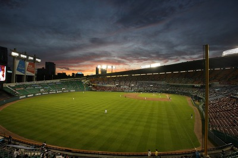

KBO 리그의 프로야구단으로 대한민국 최초로 창단된 프로야구단. 연고지는 서울특별시. 서울을 연고지로 하는 3개의 프로야구단 중 하나이며, 한국 프로야구 원년 우승팀이기도 하다.
삼성 라이온즈, 롯데 자이언츠와 마찬가지로 KBO 리그 원년에 창단된 프로야구단 중 하나로 1982년 두산 OB BEARS 프로 야구단이 창단 당시의 구단명이었다.
창단 당시 연고지는 대전시를 포함한 충청남북도 였으나 3년 뒤 서울로 연고지를 변경한다는 조건이 있었기 때문에 3년 후 서울로 연고지를 이전했으며 이전 직후인 1985년엔 서울 동대문야구장을 홈 구장으로 사용하다가 1986년부터 서울종합운동장 야구장을 홈 구장으로 사용하고 있다. 마스코트는 팀 이름에서 보듯 곰이다.역대 우승년도는 1982년, 1995년, 2001년, 2015년, 2016년으로 총 5회이며 준우승은 2000년, 2005년, 2007년, 2008년, 2013년, 2017년, 2018년으로 총 7회. 삼성 라이온즈 다음으로 준우승 횟수가 많은 구단이다.
또한 4년 연속(2016~2018년) 80승을 기록한 최초의 구단이다.